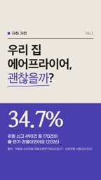
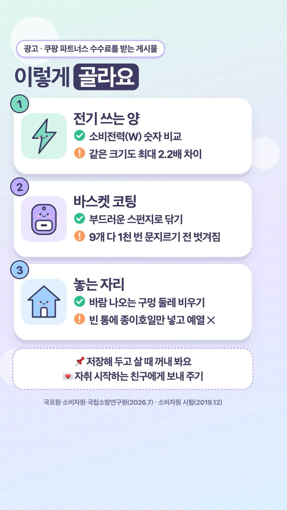

1번 영상
우리 집 에어프라이어, 괜찮을까?
광고 이 게시물은 쿠팡 파트너스 활동의 일환으로, 이에 따른 일정액의 수수료를 제공받습니다.
영상에서 비교한 3가지예요. 누르면 쿠팡 검색 결과로 가요.
영상 속 비교표 바로 보기 ↓사기 전에 딱 3개만 봐요
종류끼리 비교한 공식 시험은 아직 없어요
34.7% 위험 신고 490건 중 170건이 불·연기·과열이었어요 (2026)
이렇게 골라요
- 전기 쓰는 양
- ✔ 소비전력(W) 숫자 비교
- ⚠ 같은 크기도 최대 2.2배 차이
- 바스켓 코팅
- ✔ 부드러운 스펀지로 닦기
- ⚠ 9개 다 1천 번 문지르기 전 벗겨짐
- 놓는 자리
- ✔ 바람 나오는 구멍 둘레 비우기
- ⚠ 빈 통에 종이호일만 넣고 예열 ✕
국표원·소비자원·국립소방연구원(2026.7) · 소비자원 시험(2019.12)

다 읽으셨나요?
영상에서 비교한 3가지, 여기서 바로 쿠팡에서 볼 수 있어요.